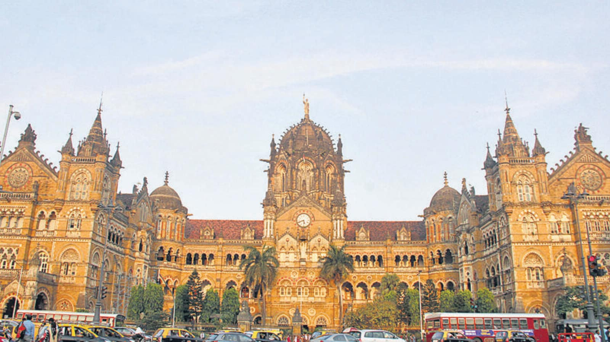
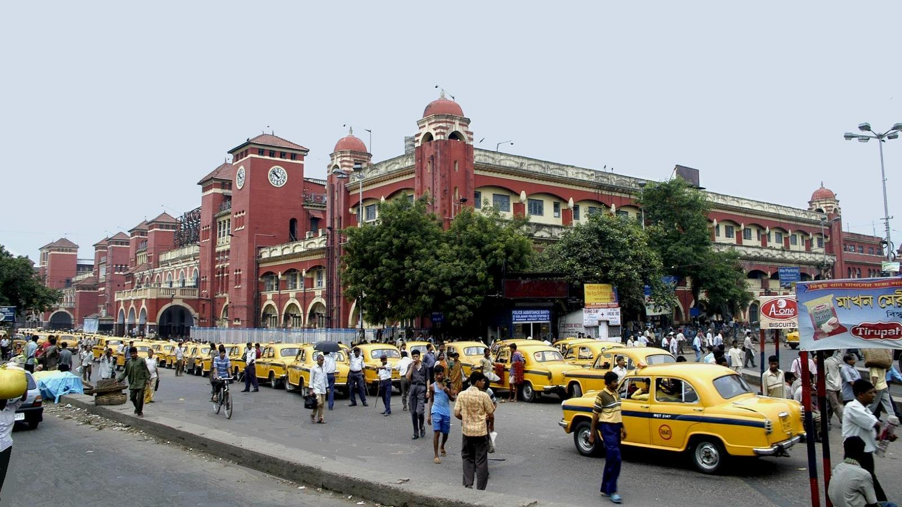
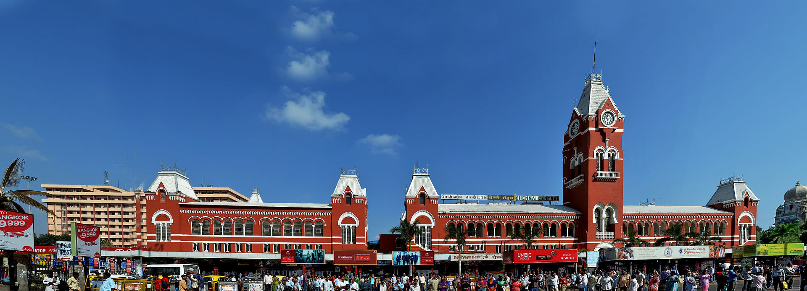
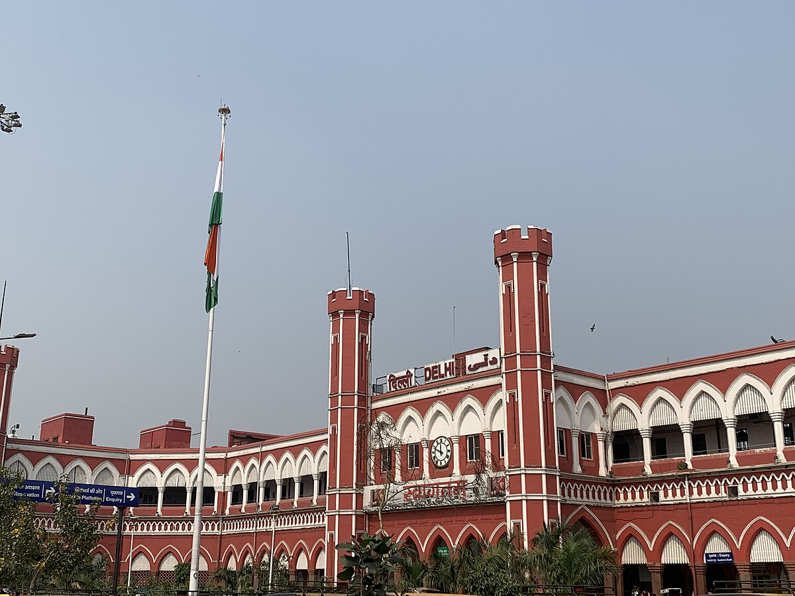
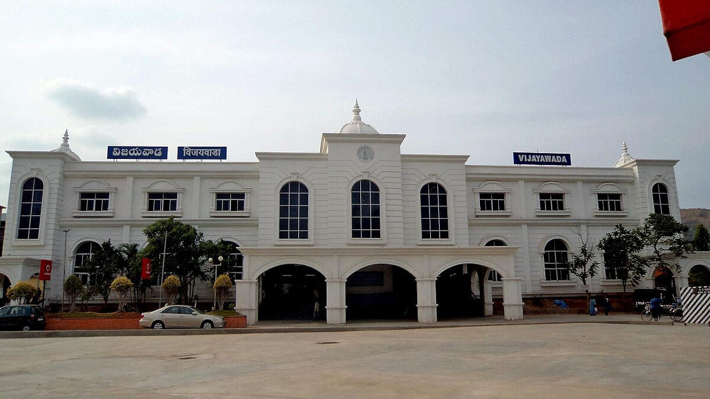
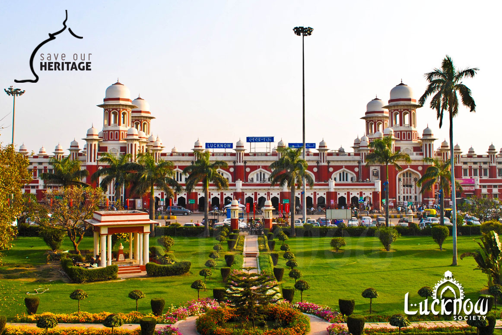

Historic Train Stations of India

Written by Lara Croft
Posted on February 11, 2025
India’s railway network, one of the largest in the world, is not just about transportation—it is a legacy of history, culture, and architectural brilliance. Some train stations in India are more than just transit points; they are symbols of the country’s rich past, colonial heritage, and engineering marvels. These historic railway stations have stood the test of time, witnessing generations of travelers and countless stories.
1. Chhatrapati Shivaji Maharaj Terminus (CSMT), Mumbai
One of the most iconic railway stations in India, Chhatrapati Shivaji Maharaj Terminus (CSMT), formerly Victoria Terminus (VT), is a UNESCO World Heritage Site. Built in 1887 to commemorate Queen Victoria’s Golden Jubilee, it is an architectural masterpiece combining Victorian Gothic Revival and Indian influences.
Notable Features
- Intricate Stone Carvings– The station features sculptures of animals, floral patterns, and stained glass windows.
- Historical Significance– It was the first station in India to run an electric train in 1925.
- Bollywood Fame– Featured in several movies, including Slumdog Millionaire.
Today, CSMT remains one of the busiest railway stations in India, serving as a hub for local and long-distance trains.

2. Howrah Junction, Kolkata
Built in 1854 ,Howrah Junction is India’s oldest and busiest railway station. Situated on the banks of the Hooghly River, it connects Eastern India to the rest of the country. With 23 platforms , it is one of the largest railway stations in terms of capacity.
Notable Features
- Historic Legacy– Howrah was the starting point of India's first passenger train from Howrah to Hooghly.
- Architectural Grandeur– The station showcases a mix of Romanesque and British architectural styles.
- Twin Terminal Structure– Divided into two terminals to manage suburban and long-distance trains efficiently.
Howrah Junction remains the lifeline of Eastern India, handling millions of passengers daily.

3. Chennai Central, Chennai
Chennai Central is a landmark railway station in South India , built in 1873. Designed by Henry Irwin , this Gothic-style station has been a crucial gateway to Southern India for over a century.
Notable Features
- Distinctive Clock Tower– The station is easily recognizable by its 136-ft high clock tower.
- Historical Importance– Served as a major stop during British rule and remains a key hub for South Indian railways.
- Colonial Architecture– A blend of Romanesque and Dravidian styles.
Chennai Central continues to be one of India’s busiest stations, linking Tamil Nadu to the rest of the country.

4. Delhi Junction (Old Delhi Railway Station), Delhi
Built in 1864, Delhi Junction, commonly known as Old Delhi Railway Station , is one of India’s oldest stations. It was designed in the Mughal architectural style, reflecting Delhi’s historic charm.
Notable Features
- Redstone Structure– Resembling the Red Fort, the station has a striking Mughal-inspired facade.
- Historic Importance– Played a significant role in India’s independence movement and partition era.
- Busy Passenger Hub– Handles thousands of travelers daily, connecting Delhi to northern and eastern states.

5. Vijayawada Junction, Andhra Pradesh
Constructed in 1888, Vijayawada Junction is one of South India’s most important railway stations. It serves as a key intersection for trains traveling between North and South India.
Notable Features
- Strategic Location– Functions as a major railway hub connecting multiple regions.
- Historical Railway Yard– Houses one of India’s largest railway yards.
- Technological Advancements– Among the first stations in India to implement electrification.

6. Charbagh Railway Station, Lucknow
Built in 1914, Charbagh Railway Station is known for its stunning Indo-Saracenic architecture. The station’s name, Charbagh, translates to "Four Gardens," reflecting its beautifully landscaped surroundings.
Notable Features
- Architectural Grandeur– A blend of Mughal, Rajput, and Awadhi styles with domes and minarets.
- Bird’s-Eye View Design– When viewed from above, the structure resembles a chessboard.
- Symbol of Lucknow’s Heritage– One of the most visually stunning railway stations in India.
Conclusion
India’s historic railway stations are more than just transit points—they are living monuments that tell the story of India's rail heritage. From colonial-era structures to architectural marvels blending Indian and European styles, these stations continue to serve millions while preserving history. As Indian Railways moves towards modernization, these historic stations remain an integral part of the country’s rich cultural and transportation legacy.
Subscribe to our Newsletter
Stay updated with the latest news and updates about Indian Railways. Subscribe to our newsletter and never miss an update!